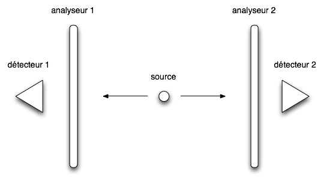

Démonstration d’une
inégalité de Bell
1. Description de l’expérience
et premiers aperçu du modèle
Je vais analyser une expérience idéalisée, que j’ai schématisée ci-dessous, mais je tenterais de faire le lien avec des expériences réelles.

La source émet une à une des paires de particules (dans les expériences d’Aspect et al., ce sont des photons). L’information contenue dans chaque paire, ou du moins celle qui aura une influence sur les mesures, sera notée $L$, qui est aussi appelé l’état de la paire à cause de l’influence du vocabulaire de la mécanique quantique. Le point fondamental est qu’une partie de cette information ne nous est pas connue: ce sont les fameuses variables cachées (dans le cas de paires de photons, on connaît le spin total de chaque paire grâce à ce que l’on connaît du mécanisme de production des paires mais on ignore le spin de chaque particule avant mesure par exemple). Je voudrais insister sur deux points importants:
- $L$ varie aléatoirement d’une paire à l’autre et $L$ évolue peut-être aussi stochastiquement pendant le temps de vol des photons d’une même paire. Cela ne signifie pas que l’on renie le déterminisme de la mécanique classique mais simplement que l’on doit se contenter de traiter statistiquement des processus dont tous les détails ne nous sont pas connus.
- On ne suppose pas que l’information $L$ au sujet de la paire est un simple juxtaposition d’informations indépendantes $L_1$ et $L_2$ au sujet de respectivement la première et la deuxième particule de la paire – cette supposition est ce que l’on peut appeler un critère de séparabilité. Pour enfoncer le clou on laisse la porte ouverte à des corrélations entre les états des deux particules (des corrélations entre les spins dans le cas de photons). L’idée est que ces corrélations sont causées par le mécanisme de production de la paire, que malheureusement nous ne connaissons pas.
Pour chaque paire, l’une des particules va vers l’ensemble analyseur/détecteur 1 tandis que l’autre va vers l’ensemble 2. Les analyseurs (ils sont identiques) laissent passer la particule aléatoirement, avec une probabilité qui dépend non seulement de $L$ mais aussi de leur réglage – dans la suite je symboliserais le réglage des analyseurs 1 et 2 par respectivement $a$ et $b$ (pour des photons, les analyseurs seraient des polariseurs qui ne laisseraient passer que les particules ayant un spin dans une direction donnée et le réglage serait donc cette direction). À nouveau cette soudaine introduction du hasard n’est pas un reniement du déterminisme classique; c’est juste que nous ne connaissons pas les détails de l’interaction entre l’analyseur et la particule et que nous devons nous contenter d’un traitement statistique.
Finalement les particules passant la barrière des analyseurs sont comptées par des détecteurs. Les paires sont émises à une fréquence suffisamment faible pour que l’on puisse dire si un coup dans le détecteur 1 et un coup dans le détecteur 2 sont dues à des particules de la même paire. Une telle situation est appelée une coïncidence.
La procédure est alors la suivante. On fixe les réglages a et b des analyseurs pour la durée de l’expérience. On génère $N$ paires et on incrémente trois compteurs $N_1$, $N_2$ et $N_{12}$ à chaque détection. $N_1$ est incrémenté de 1 à chaque fois que le détecteur 1 est touché, que le détecteur 2 le soit ou non. On définit symétriquement $N_2$. Finalement $N_{12}$ est incrémenter de 1 à chaque fois qu’une coïncidence est détectée. On définit alors les fréquences associées
2. Le modèle dans tous ses détails.
Il est maintenant temps d’introduire avec une précision mathématique les hypothèses à partir desquelles on peut déduire les inégalités de Bell.
a. Le critère de localité.
Suivant le modèle ébauché précédemment, il nous faut donc introduire, pour une paire (1,2) transportant une information $L$, la probabilité $p_1$ que la particule 1 franchisse l’analyseur 1, que la particule 2 franchisse l’analyseur 2 ou non; et symétriquement la probabilité $p_2$. Le dernier ingrédient est la probabilité $p_{12}$ que les deux particules franchissent leur analyseur respectif. À ce point il me faut écrire précisément de quoi dépendent les probabilités $p_1$, $p_2$ et $p_{12}$. C’est ici que va entrer en jeu une hypothèse fondamentale: l’analyseur 1 fonctionne indépendamment de l’analyseur 2. C’est le critère de localité.
À l’évidence cette hypothèse n’est guère évidente si les deux appareils sont très proches l’un de l’autre. Elle devient plus naturelle si ils sont distants mais cela reste subjectif. Cependant, la relativité restreinte permet de rendre ce critère quantitatif, puisque aucune information ne peut passer d’un analyseur à l’autre plus vite que la lumière. L’implémentation expérimentale de cette idée n’est pas aisée malheureusement et plusieurs expériences prétendirent faussement avoir atteint ce but, par exemple la seconde expérience de Aspect et al. 1 Cette deuxième faille potentielle est appelée “timing loophole” dans la littérature car on fait varier les réglages des polariseurs pendant le vol des photons de la source aux détecteurs avec un timing suffisamment rapide pour s’assurer du critère de localité. Ce “timing loophole” fut fermé de manière satisfaisante par Weihs et al. 2 en 1998.
Par souci de simplicité, laissons les détails de coté et admettons le critère de localité. Deux conséquences en résultent qui vont nous être utiles dans la suite.
- La probabilité $p_1$ ne peut pas dépendre du réglage $b$ de l’analyseur 2 et symétriquement la probabilité $p_2$ ne peut pas dépendre du réglage $a$ de l’analyseur 1. Par contre elles dépendent à priori de l’état de la paire et je noterais donc $p_1(L,a)$ et $p_2(L,b)$.
- les événements “la particule 1 traverse l’analyseur 1” et “la particule 2 traverse l’analyseur 2” sont indépendants et donc $p_{12}$ est le produit de $p_1$ et $p_2$. Je noterais donc
On notera encore une fois que $p_{12}$ dépend de l’état de la paire et donc des possibles corrélations entre les deux particules. Le critère de localité, qui s’applique aux analyseurs, n’est donc pas équivalent au critère de séparabilité mentionné au début de cet article.
b. Les variables cachées.
Il me faut aussi définir proprement le sens de l’expression “distribution aléatoire de l’information L d’une paire” et par là-même de faire le lien entre les probabilités définies au a) et les fréquences mesurée (\ref{frequencies}).
Afin d’éviter toute complication mathématique on va supposer que L prend des valeurs discrète $L_1, L_2, \cdots, L_n$ et on va noter $Q(L)$ la probabilité d’occurrence de la valeur $L$ (les amoureux des maths comprendront que le cas le plus général se traite avec une mesure de probabilité). Bien entendu les $Q(L)$ nous sont inconnues et on ne fait aucune hypothèse à leur sujet – bien entendu comme toutes probabilités qui se respectent, on a $0 \le Q(L) \le 1$ et la somme de tous les $Q(L)$ vaut 1. Une telle théorie est dite réaliste. Elle suppose en effet l’existence d’une réalité, au sens de la mécanique classique, c’est à dire déterministe, et introduit des probabilités, comme en physique statistique, uniquement parce que l’on ne peut pas décrire complètement les détails microscopiques des systèmes en jeu.
Les fréquences (\ref{frequencies}) sont alors données par des sommes, étendues sur l’ensemble des valeurs possibles de $L$, des probabilités $p_1(L,a)$, $p_2(L,b)$ et $p_{12}(L,a,b)$ pondérées par la probabilité d’occurrence de $L$,
où j’ai aussi rendu explicite ce dont dépendent les fréquences.
Tout cela suppose malheureusement (outre que le nombre total $n$ de paires est grand, ce qui est réalisable) que le détecteur est parfait. En effet si des particules ne sont pas comptées par le détecteur bien qu’elles soient passées au travers de l’analyseur, les fréquences mesurées ne correspondront pas aux probabilités ci-dessus. Cette faille potentielle est appelée “detector efficiency loophole” dans la littérature. L’expérience d’Aspect et al. fut la première à sérieusement fermer cette faille mais pas suffisamment au goût de beaucoup – il faut savoir aussi que pour avoir un grand nombre total $n$ de paires, il est tentant d’augmenter la fréquence d’émission et on risque alors de compter de fausses coïncidences, entre des photons de deux paires successives. C’est pourquoi de nombreuses autres expériences testant les inégalités de Bell furent menées depuis. Finalement en 2001, le “detector efficiency loophole” semble avoir été fermé à la satisfaction de la communauté des physiciens par Rowe et ses collaborateurs 3 (j’écris “semble” car je ne suis pas un expert).
En passant, les expériences d’Aspect et al. ne furent donc pas du tout définitives, contrairement à ce que beaucoup de gens croient (et pas seulement en France).
3. Une inégalité de Bell.
C’est toute la physique dont j’ai besoin ! Le reste n’est que viles manipulations mathématiques … Ah si ! Il y a juste un dernier point physique: on va faire quatre expériences telles que décrites au 1), la première avec la combinaison de réglage $(a,b)$ des analyseurs, la seconde avec $(a’,b)$, la troisième avec $(a,b’)$ et la dernière avec $(a’,b’)$ où $a, b, a’, b’$ sont des valeurs a priori distinctes des réglages des analyseurs.
On va utiliser le lemme suivant, que je ne démontrerais pas (exercice !): si $x,x’, y,y’$ sont des nombres réels entre 0 et 1 inclus, alors on a l’inégalité (large)
En utilisant (\ref{probaprod}) et en l’appliquant à
,
on obtient
En utilisant (\ref{freqform}), une sommation de ces équations pondérées par $Q(L)$ sur toutes les valeurs de L donne
qui est l’inégalité de Bell que cet article se proposait de démontrer.
4. Test de cette inégalité de Bell.
Toutes les grandeurs apparaissant dans (\ref{bellinequal}) sont des taux de comptage et il est donc à priori possible de tester cette inégalité. Il se trouve que si l’on utilise des paires de photons dites dans un état singlet, que l’on sait produire en grand nombre, la mécanique quantique prédit qu’il existe des réglages $a$, $b$, $a’$ et $b’$ des polariseurs tels que le membre de gauche de (\ref{bellinequal}) soit égale à $2^\frac{3}{2}$. Ces réglages sont: $a$ perpendiculaire à $a’$ (je rappelle que pour des photons le réglage de l’analyseur est une direction), $b$ perpendiculaire à $b’$ et un angle de $\frac{\pi}{8}$ entre $a$ et $b$.
Par conséquent, de telles expériences peuvent atteindre deux buts: (a) montrer que les inégalités de Bell sont violées et donc qu’une théorie locale avec variables cachées (dont les postulats fondamentaux ont été discutés dans cet article) n’est pas viable et (b) confirmer la prédiction de la mécanique quantique. Il existe maintenant un ensemble consistent d’expériences qui ont réalisé ces deux buts.